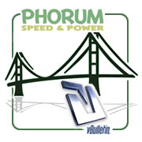

GeoCoreCE Add-on Modules
Account Balance Add On

Anonymous Listing Add On
Attention Getters Add On
Income Earning Feature
This Add On offers you the ability to generate additional income through your site by charging sellers a premium to have an "attention getter" image displayed next to their classified ad, auction, or directory listing.
Bulk Uploader Add On
Contact Us Form Add On
Listing Export Add On
Debug Logging Add On
Debug Message Add On
Discount Codes Add On
Enterprise Pricing Add On
Example Add On
Featured Level Add On

Income Earning Feature
The Featured Level Add On will power your GeoCoreCE web site with additional revenue. This Add On will allow you to spread out featured displays around your website and charge for each.
Forum Bridge Add On

The Forum Bridge Add On is a product integration tool that allows you to operate one or more GeoCoreCE
installations while sharing the users with either vBulletin or Phorum forum board software.
GeoCoreCE Bridge Add On
Geographic Navigation Add On
Google Maps Add On
Main E-Mail Sender Add On
Mobile API Add On
Multi-Admin Add On
Pedigree Tree Add On
Security Image Add On
SEO Add On
Sharing Add On
Signs & Flyers Add On

Social Connect Add On
Storefront Add On
Income Earning Feature
The Storefront Add On offers each seller who has a Storefront subscription an interactive set of pages built directly into your site. This gives the seller the opportunity to highlight their listings.
Subscriptions Add On
Income Earning Feature
The Subscription Add On will power your GeoCoreCE web site with subscription billing. This Add On will allow you to generate recurring revenue through subscription based access.
Tokens Add On
Income Earning Feature
"Tokens" can be used by customers to remove the basic cost of the listing. You can issue them to customers for free or charge for future usage on your site. You can even set up token “bundles” that the user can purchase from you.
Twitter Feed Add On